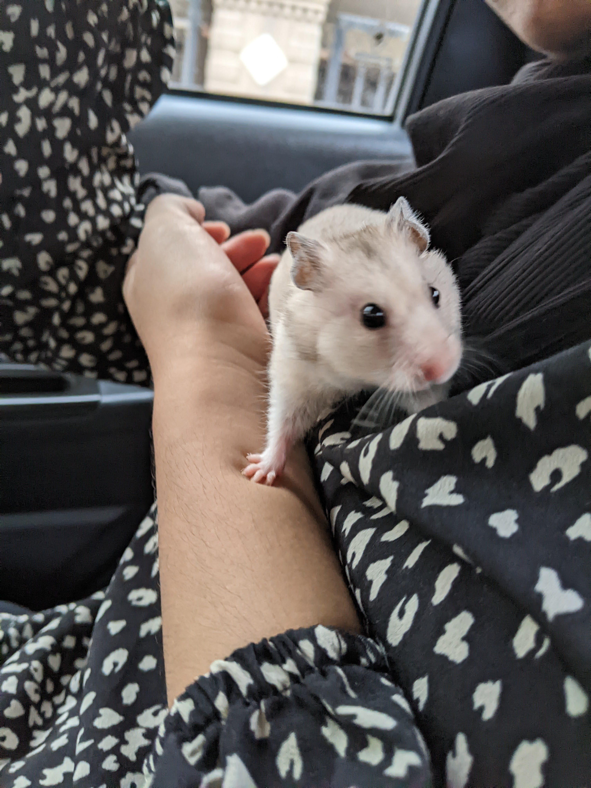
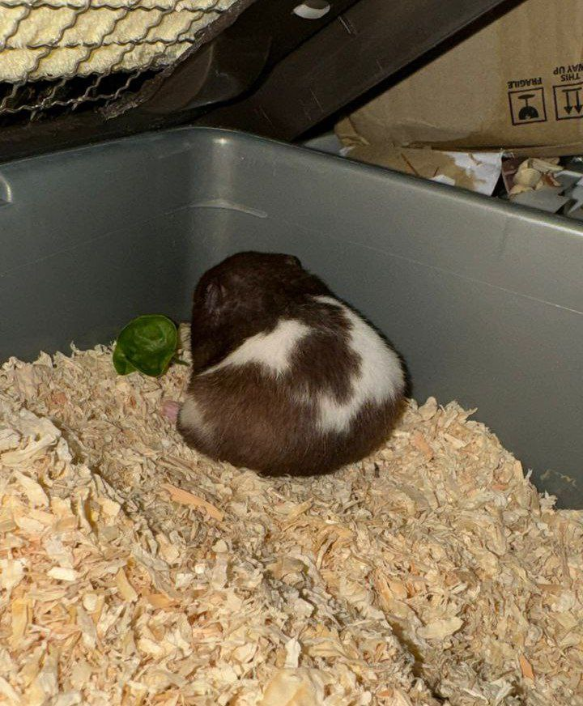

My Pet
Pet hamster is a delightful bundle of fur and energy, compact but overflowing with charm. With its round body and soft, dense coat, its fur might be a mix of various colors, adding to its overall cuteness. The tiny paws are equipped with delicate claws that they use to scurry about and explore their surroundings.
I have several reasons why I love my pet hamster. It always makes me grin because of how lovely and adorable they look. Its lively nature, which ranges from amusing pranks to inquisitive investigation, brings a unique delight to my daily existence. Hamsters are low-maintenance pets that provide company without requiring a lot of effort or care, which fits my busy lifestyle.
Forming a connection with my hamster involves gentle handling, providing food, and spending time in its company. While it may not exhibit overt affection, the subtle ways it expresses comfort and trust contribute to the special bond we share. Overall, the love I feel for my pet hamster is a result of the joy, companionship, and unique qualities it brings to my life.
My Hamsters
| Tarragon | |||
|---|---|---|---|
| Sage | |||
|---|---|---|---|
|  |  |
||
| Licorice | |||
|---|---|---|---|
|  | |||
Copyright ©2023 Izzah Iskandar